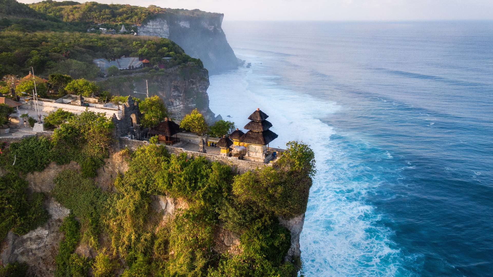
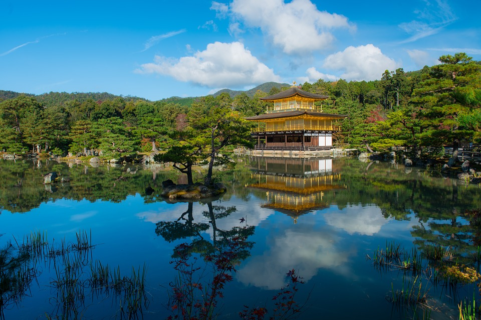

Discover Venice, a city of romance, where each canal holds a secret and every sunset
promises a dream. Experience serenades, ancient bridges, and an unparalleled romantic allure.
Bali - Island of the Gods

Lose yourself in the serene landscapes of Bali, where spirituality meets nature. From
mystical temples to undulating rice terraces, Bali beckons the soul and soothes the heart.
Mystique of Marrakech
Step into Marrakech, the red city where tradition dances with the present. Traverse
bustling souks, get enchanted by fragrant gardens, and feel the touch of history.
Wonders of Kyoto

Travel back to ancient Japan with Kyoto, where traditions come alive. Watch cherry
blossoms frame historic temples and let traditional tea ceremonies transport you to another era.
"The best amature travel blog of the year. In my twenty years at New York time I havent seen a blog post as autentic a john does blog." Tim Hank, New York Times."